Pratik J. Parikh, Ph.D.
Professor, Industrial & Systems Eng
Joint, Surgery & Computer Science
President (2019-20), IISE-Logistics/SC Division
Chair/VC (2015-19), INFORMS-Facility Logistics
Co-Director, IHE Graduate Program
Wright State University, Dayton, OH 45435
pratik.parikh@wright.edu
My research on designing and analyzing complex systems, specifically in supply chain and healthcare, using data analytics and optimization methods has been funded by the National Science Foundation, the VA, the State of Ohio, and industry. I have also taught methodological and applied courses in probability, stochastic modeling, supply chain design and analysis, and production and service systems.
I have been invited as a guest speaker on several occasions, most recently at Shanghai Jiao Tong Univ, Zhejiang Univ, Univ of Florida, Oklahoma State University, IIM-Ahmedabad, Purdue University, and at various medical centers such as Boston VA, Maine Medical, and Miami Valley Hospital.
Before joining WSU in 2009, I was with the Global R&D team at Manhattan Associates, Inc. (Atlanta, GA), a leader in supply chain software. I received my Ph.D. in Industrial and Systems Engineering (2006) under Prof. Russell Meller. Please see my CV for more details.
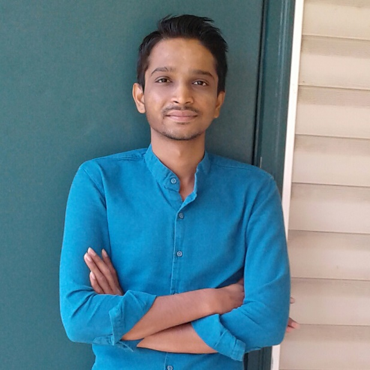
Sagar Hirpara PhD student (expected 2022) DAOL Alumnus (MS, 2019) Best Student Paper (Log/SC Track, IISE 2019) Lisa Zaken Award For Excellence (IISE 2019) Best Track Paper (FDP Track, IISE 2020)
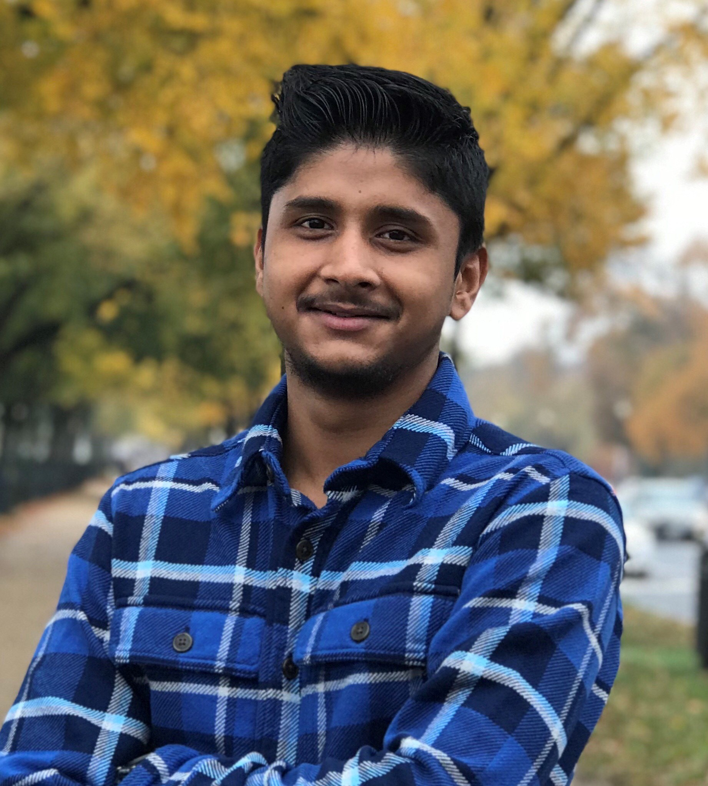
Uttam Karki PhD student (expected 2022) DAOL Alumnus (MS, 2019)
Lin Lin PhD student (expected 2022)
Lijian Xiao PhD student (exp. Fall 2020) (Co-advised with Dr. Zhang, now at Alibaba)
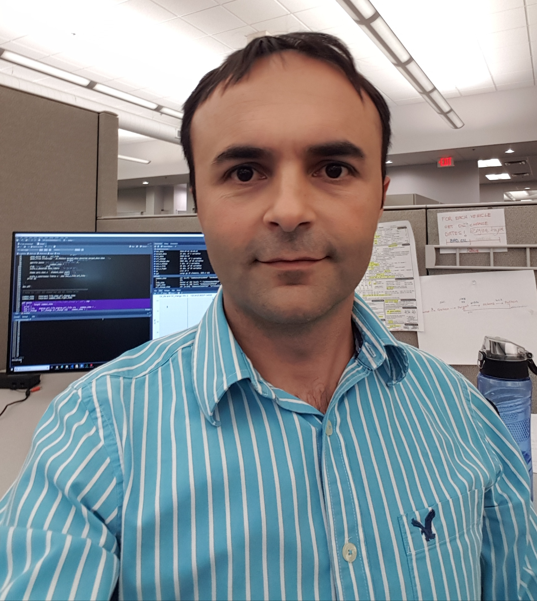
Hakan Gecili Ph.D., 2020
Bradley (Brad) Guthrie Ph.D., 2018 DAOL Alumnus (MS, 2015) Sr. OR Analyst, Perduco, Dayton Grad Student Excellence Award (PhD, 2019) Best Paper (Facilities Design & Planning, IISE 2018) Best Student Paper (2nd place, Logistics/SC Track, IISE 2017) Grad Student Excellence Award (MS, 2016) Univ Ph.D. Assistantship (2015-16) BIE Dept Scholarship (2013-14)
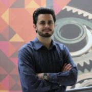
Nicholas (Nick) Ballester Ph.D., 2017 Development Leader, IU Health, Indianapolis Best Paper (Healthcare, IISE Annual 2017) IISE Doctoral Colloquium (2016) Gibreth Memorial Scholarship from IISE (2015-16) Univ Ph.D. Assistantship (2013-14) Outstanding ISE Undergrad (2013)

Corinne (Cori) Mowrey Ph.D., 2016 DAOL Alumna (MS, 2011) Assistant Professor, Dept of EMST, Univ of Dayton Best Paper (Facility Logistics, IISE Annual 2017) Outstanding BIE Graduate (2015) Attended IISE Doctoral Colloquium in 2015 Gibreth Memorial Scholarship from IISE (2014-15) Integrated Systems & Controls Council Honor Scholarship from MHEFI (2014-15) Grad Student Excellence Award (2012)
Robert (Bob) Myers Ph.D., 2016 Research Engineer, WSRI Adjunct Faculty, Indiana Wesleyan Univ and WSU Most Promising Research - SOCHE Graduate STEM Research Fair (2016) Tied 1st place (co-author) - Best Translational/Basic Science Award, Medical Student Research Symposium, WSU (2014-15) 1st place - Daniel Elliott Resident Research Symposium (2014)
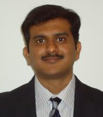
Bhanuteja Sainathuni Ph.D., 2013 Sr Operations Research Analyst, WestRock (Atlanta, GA)
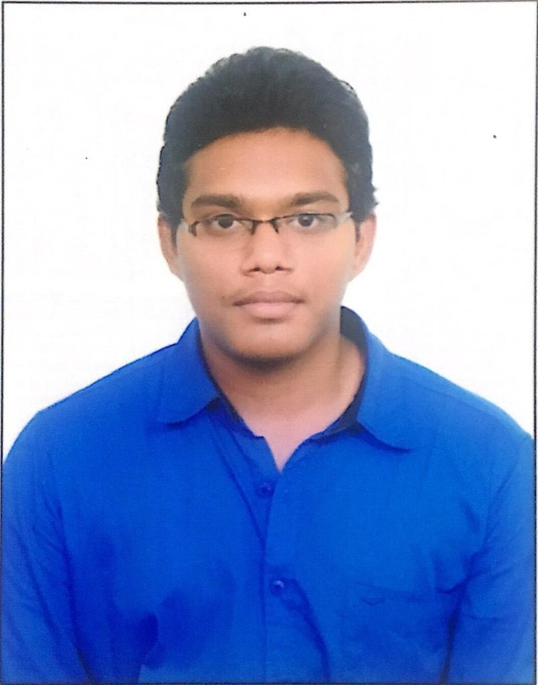
Devarsha Katragadda MS CS, Fall 2020
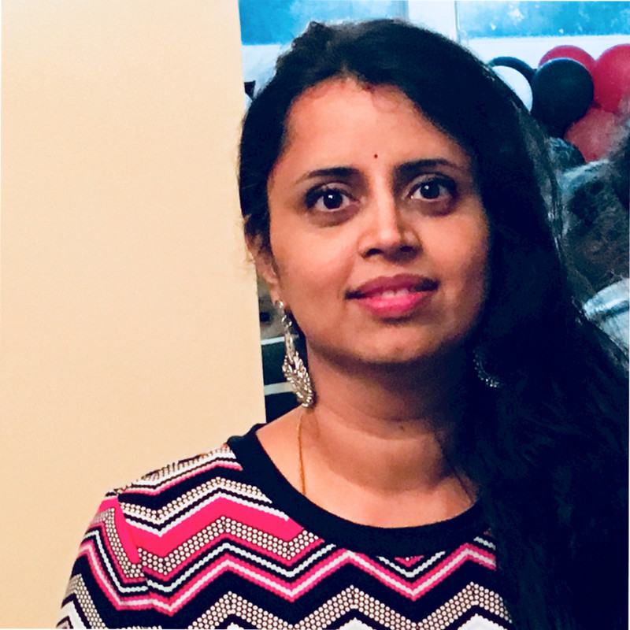
Swetha Kondapalli MS IHE, exp. Summer 2020
Uttam Karki MS IHE, 2019 PhD student in our lab
Sagar Hirpara MS IHE, 2019 Best Student Paper (Log/SC Track, IISE 2019) Lisa Zaken Award For Excellence (IISE, 2019) PhD student in our lab
Monit Vaishnav MS IHE, Spring 2019
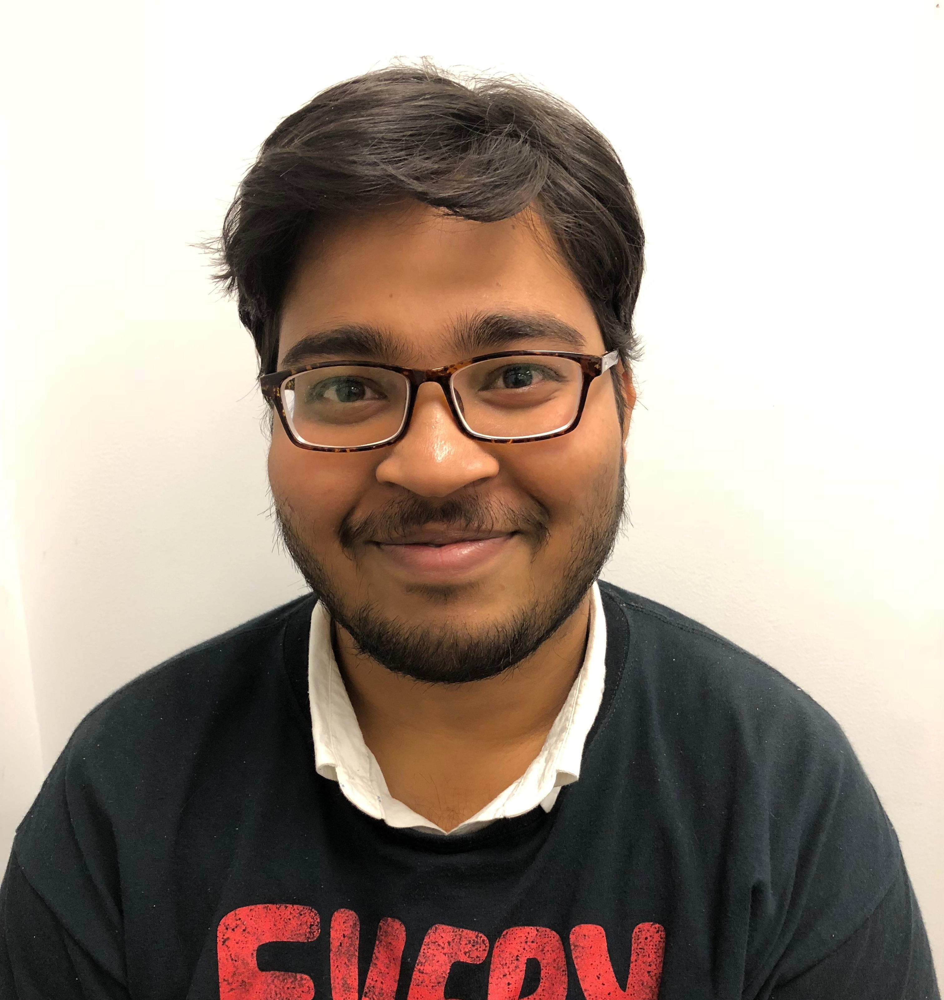
Aditya Yenneti MS CS, Summer 2019 Software Engineer, LexisNexis, Rayleigh, NC
Srinivasa Duggempudi MS CS, 2017 JPMorgan Chase, Columbus, OH
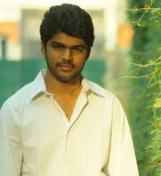
Sampath Gogineni MS CS, 2017 Ph.D. Student, Computer Science, WSU
Bradley Guthrie MS IHE, 2015 Grad Student Excellence Award (2016) BIE Dept Scholarship (2013-14) Joined Ph.D. in IHE (in our group)

Chandrasekar Hariharan MS CS, 2015 Software Engineer, Walmart Labs, San Francisco
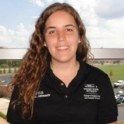
Kylie (Bertsch) Ramsey MS IHE, 2014 University of Cincinnati
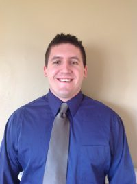
Brian Zoll MS IHE, 2013 Grad Student Excellence Award (2014) Industrial Engineer, Honda (OH)
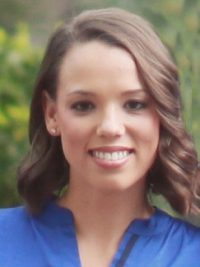
Elizabeth Crawford MS IHE, 2012 Grad Stud Excellence Award (2013) OR Systems Analyst, DoD (Washington DC)
Corinne (Cori) Mowrey MS IHE, 2011 Grad Student Excellence Award (2012) Joined Ph.D. in IHE (in our group)

Sheena Wallace-Finney MS IHE, 2011 Industrial Engineer, UTC Technologies (OH)
Bharathwaj Vijayakumar MS IHE, 2011 Grad Stud Excellence Award (2011) OR Analyst, Rowan University (NJ)
Ramanan Veeragavan MS IHE, 2011 Sr Customer Insights Analyst, Penske Logistics (PA)
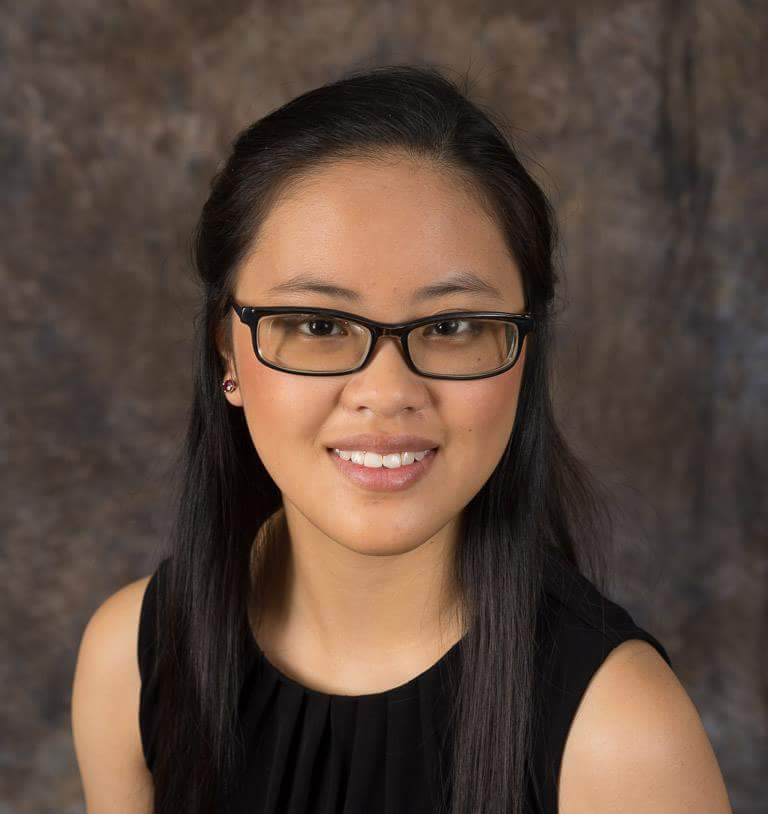
Kara Combs (ISE Senior) Vice President, WSU-IISE Chapter (2019-21) UPS Scholarship (IISE, 2020) 1st place, UG Research Competition (Great Lakes Regional Conf, 2020)
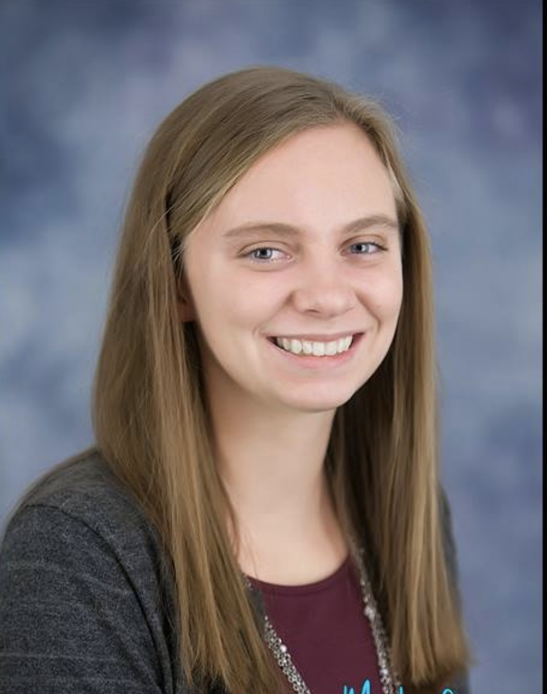
Susan Sebastian (ISE Senior) President, WSU-IISE Chapter (2020-21) Society of Health Systems Scholarship (2020)
Kaitlyn Ellison (ISE Senior) President, WSU-IISE Chapter (2019-20) Vinod and Gail Sahney Scholarship (IISE, 2019)
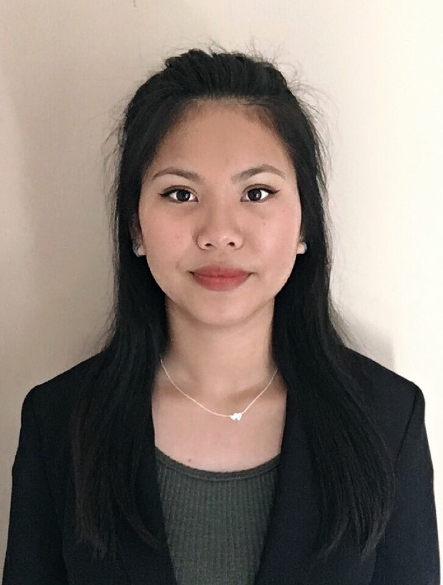
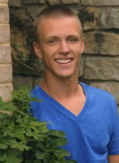
Logan Mamer (BS ISE, 2018) VP, WSU-IISE Chapter (2015-17) Marvin Mundel Scholarship (IISE, 2017-18) Industrial Engineer, Gulfstream Aerospace, Savannah (GA)
Jessy Eid (BS ISE, 2017) President, WSU-IISE Chapter (2015-17) BIE Dept Chair's Choice Award (2016-17) Clinical Analytics Specialist, Akron Children's Hospital, Akron (OH)
Stephanie Martens (BS ISE, 2015) Harold and Inge Marcus Scholarship (IISE, 2014-15) BIE Dept Chair's Choice Award (2013-14) Outstanding ISE Graduate (2015) Past President, WSU-IISE Chapter (2013-15) Sr. Logistics Analyst, Anheuser-Busch InBev, Columbia (MO)